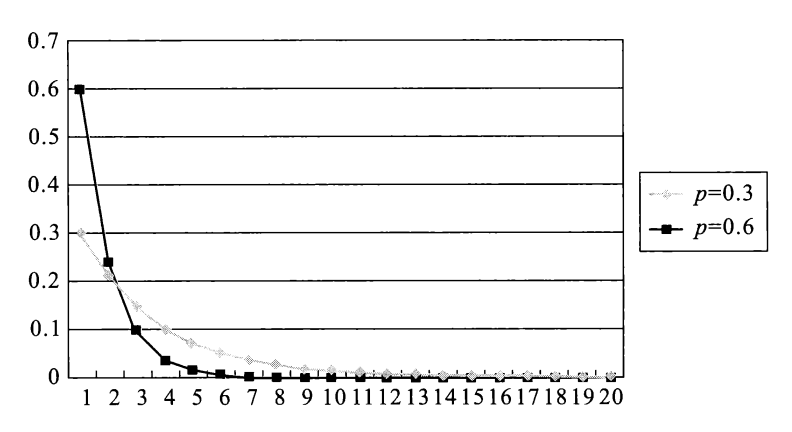
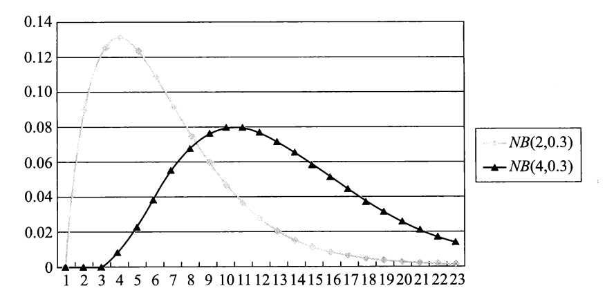
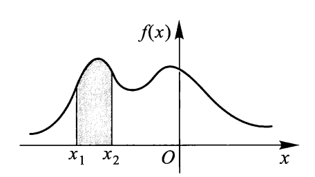

第 2 章 随机变量及其概率分布⚓︎
约 1962 个字 预计阅读时间 10 分钟
定义：设随机试验样本空间为 \(S\)，若 \(X=X(e)\) 为定义在样本空间 \(S\) 上的实值单值函数，\(e \in S\)，则称 \(X = X(e)\) 为随机变量。
一般用大写字母 \(X, Y, Z, X_1, X_2, \dots\) 或 \(\xi, \eta\) 来表示随机变量，用小写字母 \(x, y, z, x_1, x_2, \dots\) 来表示实数。
离散型随机变量⚓︎
设 \(X\) 为离散型随机变量，若其可能取值为 \(x_1, x_2, \dots, x_k, \dots\)，则称
为 \(X\) 的概率分布律或概率分布列，简称为 \(X\) 的分布律(distribute law)。
概率分布律还可用下面的列表法表示：
| \(X\) | \(x_1\) | \(x_2\) | \(\dots\) | \(x_k\) | \(\dots\) |
|---|---|---|---|---|---|
| \(p\) | \(p_1\) | \(p_2\) | \(\dots\) | \(p_k\) | \(\dots\) |
概率分布律的性质：
- \(p_k \ge 0, k = 1, 2, \dots\)
- \(\sum\limits_{k=1}^{+ \infty}p_k = 1\)
下面介绍几种重要的离散型随机变量的概率分布。
0-1(p) 分布⚓︎
若概率分布律为：
| \(X\) | \(0\) | \(1\) |
|---|---|---|
| \(p\) | \(1-p\) | \(p\) |
（或者写成 \(P(X = k) = p^k(1-p)^{1-k}, k = 0, 1\)）
其中 \(0 < p < 1\)，称 \(X\) 服从参数为 \(p\) 的0-1 分布，也称为两点分布，并用记号 \(X \sim 0-1(p)\) 表示。
二项分布⚓︎
若概率分布律为：
其中 \(0 < p < 1, n \ge 1\)，则称 \(X\) 服从参数 \((n, p)\) 的二项分布(binomial distribution)，记为 \(X \sim B(n, p)\)。
定义：设在 \(n\) 次独立重复试验中，每次试验都只有两个结果：\(A, \overline{A}\)，且每次试验中 \(A\) 发生的概率不变。记 \(P(A) = p, 0 < p < 1\)，称这一系列试验为\(n\) 重伯努利试验。因此，二项分布与 \(n\) 重伯努利试验之间的关系密不可分。
泊松分布⚓︎
若概率分布律为：
其中 \(\lambda > 0\)，则称 \(X\) 服从参数为 \(\lambda\) 的泊松分布(Poisson distribution)，记为 \(X \sim P(\lambda)\)。
下图展示了 \(\lambda = 1, 2\) 和 \(5\) 时泊松分布概率分布律的折线图：
当 \(n\) 足够大，\(p\) 充分小（\(p < 0.1\)
其中 \(\lambda = np\)。
例子：二项分布与泊松分布概率分布律的比较
其他分布⚓︎
-
超几何分布(hypergeometric distribution)
-
概率分布律：
\[ P(X = k) = \dfrac{C_a^kC_b^{n - k}}{C_N^n}, k = l_1, l_1 + 1, \dots, l_2 \]其中 \(l_1 = \max\{0, n - b\}, l_2 = \min\{a, n\}\) - 记作\(X \sim H(n, a, N)\) - 概率分布律柱形图：

- 例子：有 \(N\) 个球，其中有 \(a\) 个白球和 \(b\) 个红球（\(a + b = N\)
） ，从中无放回地取 \(n(n \le N)\) 个球，设每次取到各球的概率相等，令随机变量 \(X\) 为取到的白球个数，\(X\) 服从超几何分布。
-
-
几何分布(geometric distribution)
-
概率分布律：
\[ P(X = k) = p(1 - p)^{k-1}, k = 1, 2, \dots \] -
概率分布律折线图：
- 例子：在 \(n\) 重伯努利试验中，有两个结果 \(A\) 和 \(\overline{A}\)，记 \(X\) 为 \(A\) 首次发生所需要的试验次数，则 \(X\) 服从几何分布。
-
-
帕斯卡分布（负二项分布）
- 概率分布律：
\[ \begin{align} P(X = k) & = P\{前 k - 1 次中恰有 r - 1 次发生，且第 k 次 A 发生\} \notag \\ & = C_{k - 1}^{r - 1}p^r(1-p)^{k - r}, k = r, r + 1, r + 2, \dots \notag \end{align} \]其中 \(r \ge 1\)
- 记作 \(NB(r, p)\)
- 概率分布律的折线图
- 例子：仍然在 \(n\) 重伯努利实验中，令 \(X\) 为 \(A\) 发生 \(r\) 次时所需的试验次数，\(X\) 服从帕斯卡分布。
随机变量的概率分布函数⚓︎
设 \(X\) 为一随机变量，\(x\) 为任意实数，函数
称为随机变量 \(X\) 的概率分布函数，简称分布函数(distribution function)。对任意实数 \(x_1, x_2(x_1 < x_2)\)，有：
几何意义：将 \(X\) 设想为数轴上一随机点，那么 \(X\) 落在区间 \((-\infty, x]\) 上的概率即为 \(F(x)\)，如下图所示：
若 \(X\) 为离散型随机变量，设概率分布律为 \(P(X = x_i) = p_i, i = 1, 2, \dots\)，则 \(X\) 的分布函数为：
 分布函数的性质：
分布函数的性质：
- \(F(x)\) 单调不减
- \(0 \le F(x) \le 1\)，且有 \(\lim\limits_{a \rightarrow -\infty}F(a) = 0, \lim\limits_{b \rightarrow +\infty}F(b) = 1\)，简记为 \(F(-\infty) = 0, F(+\infty) = 1\)
- \(F(x + 0) = F(x)\)，即 \(F(x)\) 是右连续函数
例子
下面两张图分别为离散型和连续型随机变量的分布函数曲线：
连续型随机变量⚓︎
对于随机变量 \(X\)，其分布函数为 \(F(x)\)，若存在一个非负的实值函数 \(f(x)\)，\(-\infty < x < +\infty\)，使得对任意实数 \(x\)，有：
则称 \(X\) 为连续型随机变量，称 \(f(x)\) 为 \(X\) 的概率密度函数(probability density function)，简称密度函数。
易知此时分布函数 \(F(x)\) 是连续的，它的几何意义为 \(f(x)\) 的曲线与 x 轴所围成的面积：
密度函数的性质：
- \(f(x) \ge 0\)
\(\int_{-\infty}^{+\infty}f(x)\text{d}x = 1\)
-
对任意实数 \(x_1, x_2(x_1 < x_2)\) $$ P(x_1 < X \le x_2) = F(x_2) - F(x_1) = \int_{x_1}^{x_2}f(t)\text{d}t $$
几何意义见下图：
- 由该性质易证 \(P(X = a) = 0\)，即连续型随机变量取任一定值的概率为 0。因此，连续型随机变量落在开区间与相应闭区间上的概率相等。
- 在 \(f(x)\) 的连续点 \(x\) 处，\(F'(x) = f(x)\)
- 由该性质知，在 \(f(x)\) 的连续点 \(x\) 处，当 \(\Delta x\) 充分小时，有 $$ P(x < X \le x + \Delta x) \approx f(x)\Delta x $$
下面介绍几种重要的连续型随机变量的概率分布。
均匀分布⚓︎
设随机变量 \(X\) 具有如下密度函数：
则称 \(X\) 服从区间 \((a, b)\) 上均匀分布(uniform distribution)，记为 \(X \sim U(a, b)\)。此时 \(X\) 的分布函数为：
密度函数和分布函数的曲线如下所示：
设有实数 \(c, l\)，满足 \(a \le c < c + l \le b\)，则：
可以看到，该结果与 \(c\) 无关，而与 \(l\) 成正比。其几何意义是：\(X\) 落在区间 \((a, b)\) 内任一长度为 \(l\) 的子区间的概率为子区间的长度与该区间的长度之比。
例题
指数分布⚓︎
设随机变量 \(X\) 具有密度函数：
其中 \(\lambda > 0\)，则称 \(X\) 服从参数为 \(\lambda\) 的指数分布(exponential distribution)，记为 \(X \sim E(\lambda)\)
下图展示了不同 \(\lambda\) 值下的密度函数曲线：
指数分布的分布函数为：
重要性质——“无记忆性”：当 \(X \sim E(\lambda)\) 时，对 \(\forall\ t > 0, t_0 > 0\)，有：
改写成：
用文字描述这一性质为：
- 若 \(X\) 表示等待时间，那么无记忆性说明只要还没等到，那么剩余等待时间仍然服从参数为 \(\lambda\) 的指数分布
- 若 \(X\) 表示元件寿命，那么无记忆性说明只要还没坏掉，那么剩余寿命仍然服从参数为 \(\lambda\) 的指数分布
正态分布⚓︎
设随机变量 \(X\) 具有密度函数：
其中 \(-\infty < \mu < +\infty, \sigma > 0\)，则称 \(X\) 服从参数为 \((x, \mu)\) 的正态分布(normal distribution)，简称 \(X\) 为正态变量，记为 \(X \sim N(\mu, \sigma^2)\)。
密度函数曲线如下，它的特点是 \(f(x)\) 值中间大，两头小，且是对称的：
其中：
- \(\mu\) 为位置参数，它决定密度函数对称轴的位置以及 \(X\) 取值集中的位置
- \(\sigma\) 为尺度参数，它是一个反映 \(X\) 取值分散程度的一个指标量，其值越大，曲线峰越低，越扁平
密度函数的性质：
- \(f(x)\) 关于 \(x = \mu\) 对称
- \(\max\limits_{-\infty < x < +\infty}f(x) = f(\mu) = \dfrac{1}{\sqrt{2 \pi} \sigma}\)
- \(\lim\limits_{|x - \mu| \rightarrow + \infty} f(x) = 0\)
正态分布的分布函数为：
当 \(X \sim N(\mu, \sigma^2)\) 时，对任意实数 \(a, b(a < b)\)，有：
特别地，当 \(\mu = 0, \sigma = 1\) 时，记正态变量为 \(Z\)，那么 \(Z \sim N(0, 1)\)，称 \(Z\) 服从标准正态分布
- 密度函数：\(\varphi (x) = \dfrac{1}{\sqrt{2\pi}}e^{-\frac{x^2}{2}}, - \infty < x < + \infty\)
- 分布函数：\(\Phi(x) = \int_{- \infty}^x \dfrac{1}{\sqrt{2\pi}}e^{-\frac{t^2}{2}} \text{d} t\)
- 密度函数（左图）和分布函数（右图）的曲线图如下：
- 密度函数关于 \(y\) 轴对称，因此 \(\Phi(x) + \Phi(-x) = 1\)
-
当 \(X \sim N(\mu, \sigma^2)\) 时，对任意实数 \(a, b(a < b)\)，令 \(t = \dfrac{x - \mu}{\sigma}\)，得：
\[ P(a < X < b) = \int_{\frac{a - \mu}{\sigma}}^{\frac{b - \mu}{\sigma}}\dfrac{1}{\sqrt{2\pi}}e^{-\frac{t^2}{2}} \text{d} t \]此时被积函数为标准正态分布的密度函数（\(Y = \dfrac{X - \mu}{\sigma} \sim N(0, 1)\)
） ，故：\[ P(a < X < b) = \Phi(\dfrac{b - \mu}{\sigma}) - \Phi(\dfrac{a - \mu}{\sigma}) \]所以，一般正态分布的计算 -> 标准正态分布的计算
标准正态分布函数值表
若 \(X \sim N(\mu, \sigma^2)\)，则：
当 \(k = 1, 2, 3\) 时，其值分别为 \(0.6826, 0.9544, 0.9974\)。它们相对比较常用，对于其他 \(k\) 值，可以用上面给出的公式计算，然后再查上面的表找到对应值。
随机变量函数的分布⚓︎
若已知 \(X\) 的分布，\(Y = g(X)\)，求 \(Y\) 的概率分布的步骤：
- 离散型随机变量：
- 先列出 \(Y\) 的所有可能取值 \(y_1, y_2, \dots, y_k, \dots\)
- 然后找出事件 \(\{Y = y_k\}\) 的等价事件 \(\{X \in D_k\}\)
- 从而求出 \(Y\) 的概率分布律 \(P(Y = y_k) = P(X \in D_k)\)
- 连续型随机变量：
- 先写出 \(Y\) 的概率分布函数：\(F_Y(y) = P(Y \le y)\)
- 然后找出 \(\{Y \le y\}\) 的等价事件 \(\{X \in D\}\)，得 \(F_Y(y) = P(X \in D)\)
- 再求出 \(Y\) 的概率密度函数 \(f_Y(y)\)（一般是对 \(F_Y(y)\) 求导）
关键是找出等价事件
设随机变量具有密度函数 \(f_X(x)\)，令 \(Y = |X|, Z = X^2\)，它们的概率密度函数分别为：
特别地，当 \(y = g(x)\) 具有严格单调性（严格单增 / 严格单减）时，记 \(X\) 的密度函数为 \(f_X(x)\)，\(y = g(x)\) 的反函数为 \(x = h(y)\)，则 \(Y\) 的密度函数为：
其中 \(D\) 为函数 \(y = g(x)\) 的值域。
设随机变量 \(X \sim N(\mu, \sigma^2)\)，\(Y = aX + b\)，\(a \ne 0\)，则 \(Y \sim N(a \mu + b, (a \sigma)^2)\)
- 特别地，当 \(a = \dfrac{1}{\sigma}, b = -\dfrac{\mu}{\sigma}\) 时，\(Y = \dfrac{X - \mu}{\sigma} \sim N(0, 1)\)
例题
设 \(Y = \sin X, X \sim U(0, \pi)\)，求 \(f_Y(y)\)
评论区